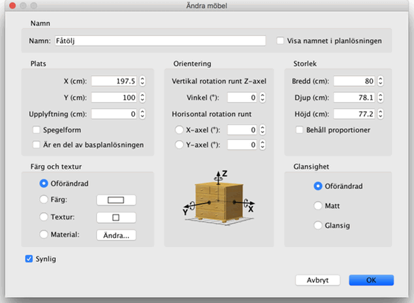

| Ändra möbler | |||
Du kan ändra position, storlek och vinkel på hemmets möbler endera med hjälp av musen eller med menyn Möbler > Ändra... När en möbel är vald i planlösningen kan du också ändra dess storlek, upplyftning eller vinkel med en av de fyra markörer som dyker upp i hörnen på den valda möbeln.
|

|
När muspekaren är på ett av dessa hörn ändras den för att visa att du kan dra och släppa det hörnet för att ändra den egenskapen av möbeln. När du trycker ner musknappen dyker en tipsruta upp för att visa värdet på den/de egenskap/er som ändras. En möbel kan också ändras med hjälp av dess inställningsruta genom att dubbelklicka på den i planlösningen eller möbellistan, eller genom att välja Möbler > Ändra... efter att du valt den.  I inställningsrutan för möbeln kan du ändra dess namn, vinkel, abskissan (X) och ordinatan (Y) för dess centrum, höjden över golvet från dess botten, dess bredd, djup, höjd, färg, om den ska visas och om dess 3D-modell ska speglas. |
|